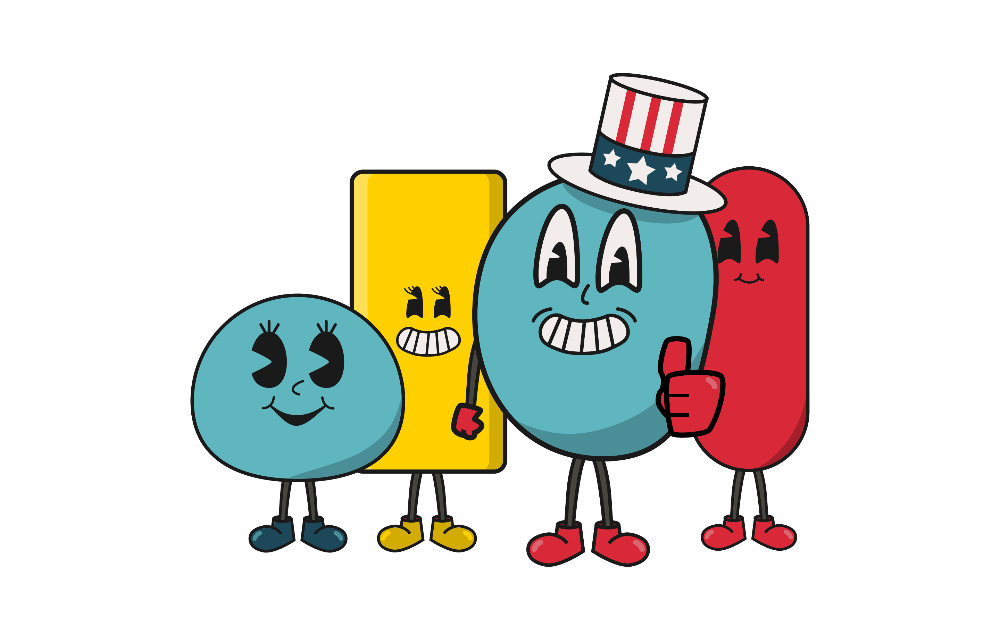

Our Story
Cartoomb Media was created in 2023, but we have been telling stories since before 2023.

The Snowman's Box
Our animation journey started with a high school animated short, "The Snowman's Box." This short was a challenge Jacob Borg made to himself to create an animated short in three days. Everything from story, to animation, to editing had to be done in this time frame. It was a simple story of a snowman receiving a strange box, but it would ignite a passion that would be unquenchable.

R.E.V.
The next story that was chosen to be told, was that of a robot sent to a explore a distant world, but he would soon discover that he was not the first sent to explore this world. This animation was the first Borg did with the Falcon Render engine and the first time we utilized particle simulations. Until R.E.V., Borg had only used the Cheetah or Cycles render engines and had shied away from particle simulations due to processing power, or lack there of.

Mr. Sam and Friends
After high school and post an animation internship, Borg found himself at Grand Canyon University (GCU), studying Graphic Design. While at GCU, Borg would go on to do animations and designs for friends' businesses, his own, and create a catalog of stories from parables to political comics.
Inspired by his studies, his and his grandmother's tenures in theater, and a hunger for storytelling and design, Borg would go on to create Cartoomb.